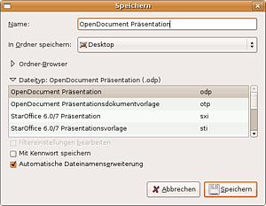
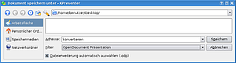
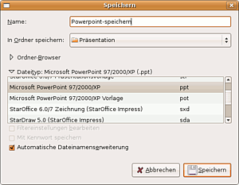

Powerpoint
Hinweis:
Die Anleitung gilt für Microsoft Office 97 bis 2003. Office Open XML Dateien (.pptx) von Microsoft Office 2007 oder neuer lassen sich ggf. nur eingeschränkt bearbeiten oder anschauen. Mit LibreOffice geht dies u.U. deutlich besser als mit Apache OpenOffice (AOO).
Auf Grund der weiten Verbreitung von Microsoft Office liegen die meisten Präsentationen im Powerpoint-Format (.ppt) vor bzw. wurden mit Powerpoint erstellt. Daher werden meist auch Powerpoint-Dateien weitergegeben und müssen unter Ubuntu verarbeitet werden. Hier können sie in das OpenDocument-Format konvertiert werden, das alle drei folgenden Office-Programme unterstützen.
Das Microsoft Powerpoint-Format ist ein proprietäres Format und daher nicht öffentlich dokumentiert. Aus diesem Grund werden importierte Powerpoint-Präsentationen unter Ubuntu sehr oft fehlerhaft dargestellt. Das gilt natürlich auch umgekehrt: Wenn man eine OpenDocument-Präsentation (.odp) in das Powerpoint-Format (.ppt) exportiert, kann es durch die Konvertierung zu Fehldarstellungen in Powerpoint kommen.
Es bieten sich unter Ubuntu vor allem Apache OpenOffice/LibreOffice-Impress sowie KPresenter (bis Ubuntu 11.10) bzw. Stage (ab Ubuntu 12.04) von Calligra/KOffice an, um Powerpoint-Dateien zu verarbeiten. Dabei ist, aus den oben beschriebenen Gründen, in der Regel eine Nachbearbeitung der importierten Folien notwendig. Möchte man eine mit AOO oder KOffice erstellte Präsentation weitergeben (z.B. für eine Veröffentlichung), so bietet sich hierfür das PDF-Format an.
Einige Hinweise, um sich das Arbeiten im Wechsel zwischen PowerPoint und AOO zu erleichtern:
Effekte weitgehend vermeiden.
auf Kompatibilität der benutzten Schriftarten achten
je Folie nur ein Bild, nicht mehrere nacheinander erscheinende Bilder in einer Folie, stattdessen mehrere Folien; wichtig für den Export als PDF
Dokumente öffnen¶
OpenOffice/LibreOffice Impress¶
Die Import- und Export-Filter von Impress sind in den letzten Jahren merklich verbessert worden und besonders in LibreOffice optimiert. So stellt die Darstellung von Powerpoint-Präsentationen unter Ubuntu und Microsoft Office (nachdem die von Impress erstellten Präsentationen exportiert wurden) in den meisten Fällen kein Problem mehr dar.
Powerpoint-Präsentationen werden unter Kubuntu und Ubuntu seit Ubuntu 11.04 standardmäßig mit LibreOffice geöffnet.
KPresenter / Stage¶
Die Importfilter von KPresenter (bis Ubuntu 11.10) bzw. Stage (ab Ubuntu 12.04) sind nicht so ausgereift wie bspw. bei LibreOffice. Powerpoint-Dateien lassen sich nach dem Programmstart von KPresenter/Stage über das Menü "Datei -> Öffnen" anzeigen und bearbeiten.
Konvertieren nach OpenDocument¶
OpenOffice/LibreOffice Impress¶
Nach dem Öffnen einer Powerpoint-Datei kann diese als OpenDocument-Präsentation (.odp) abgespeichert werden. Unter "Datei -> Speichern unter -> Dateityp" wählt man das OpenDocument-Format und konvertiert damit die Microsoft Powerpoint-Präsentation zu einer OpenDocument-Präsentation.

Sollte man mehrere Powerpoint-Präsentationen mit einem Arbeitsschritt in das OpenDocument-Format konvertieren wollen, so bietet sich der Dokumenten-Konverter an.
KPresenter / Stage¶
Sofern die Datei richtig angezeigt wird, lässt sie sich problemlos in das OpenDocument-Präsentations-Format konvertieren. Dies geschieht über "Datei -> Speichern unter". In dem sich öffnenden Menü wählt man im Filter "OpenDocument Präsentation (.odp)" aus und speichert nach Auswahl des gewünschten Ordners ab.

Speichern als Powerpoint-Präsentation¶
OpenOffice/LibreOffice Impress¶
Wie bereits erwähnt, können OpenOffice/LibreOffice-Präsentationen auch im Microsoft Powerpoint-Format abspeichert werden, damit sich diese direkt in Microsoft Powerpoint öffnen lassen.
Unter "Datei -> Speichern unter -> Dateityp" kann man das Powerpoint-Präsentations-Format auswählen.

Vorführen der Präsentation¶
Unter Windows gibt es die Möglichkeit, im "Powerpoint Pack and Go Format" zu speichern oder einen separaten PowerPoint-Viewer direkt aufzurufen. Die Präsentation startet dann sofort ohne Umweg über die Bearbeitungsansicht: F5 muss nicht gedrückt werden, Details der weiteren Folien werden nicht sichtbar. Diese Möglichkeit steht in OpenOffice-/LibreOffice-Impress leider nicht zur Verfügung.
Abhilfe schaffen die Projekte ImpressRunner  und IndeView .
und IndeView .
KPresenter / Stage¶
KPresenter / Stage verfügt über keinen Filter, um Präsentationen im Microsoft Powerpoint-Format abzuspeichern.
Videos einbinden¶
Unter Windows können Videos direkt ("Einfügen als Film") eingebunden werden und starten dann wahlweise sofort nach Aufruf der Folie oder nach Anklicken. Zwar gibt es diesen Menüpunkt in OO-Impress auch, unter Linux zumindest funktioniert das aber nicht.
Alternativ können Videos als Hyperlink eingebunden werden, müssen dann angeklickt werden und werden mit dem auf dem Rechner voreingestellten Videospieler in einem eigenen Fenster unter Windows eingebettet in die Folie gezeigt. Unter Ubuntu wird das Video leider nicht eingebettet, sondern in einem separaten Fenster gezeigt.
Unabhängig vom Betriebssystem besteht das Problem, dass im Gegensatz zu Bildern Videos nicht direkt in die Präsentation eingefügt werden, sondern lediglich der Pfad gespeichert wird. Beim Transfer z.B. mittels USB-Stick muss manuell dieser Pfad angepasst werden, wenn man nicht die Präsentation gleich auf dem Stick erstellen möchte.
Sofern keine Tondaten mit dabei sein sollen gibt es folgende Alternative: Die Präsentation in ihrem Textteil, ggf. mit Bildern, vorbereiten und jeweils als fortlaufend nummeriertes Bild exportieren (Speichern als .jpg). Bei geeigneter Umbenennung der mitzuzeigenden Bilder und Videos erhält man ein Verzeichnis alphabetisch in der gewünschten Reihenfolge, welches beliebig kopiert und transportiert werden kann. Die Präsentation erfolgt dann aus diesem Verzeichnis mittels eines Bildbetrachters mit Diaschaufunktion.
- Erstellt mit Inyoka
-
 2004 – 2017 ubuntuusers.de • Einige Rechte vorbehalten
2004 – 2017 ubuntuusers.de • Einige Rechte vorbehalten
Lizenz • Kontakt • Datenschutz • Impressum • Serverstatus -
Serverhousing gespendet von